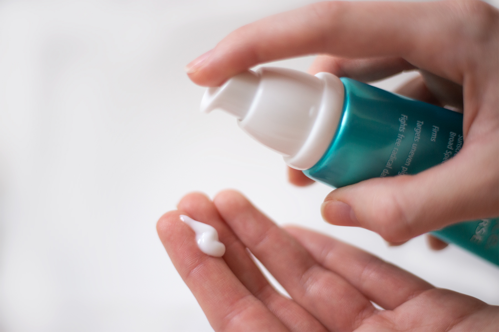
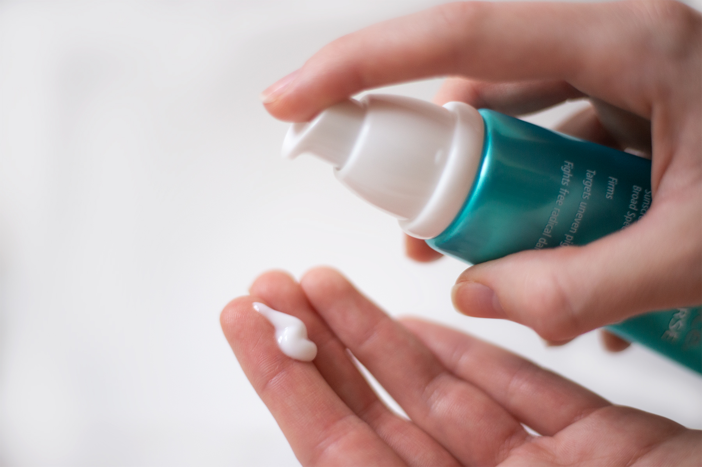

Exuviance
Age Reverse - Day Repair
Denne dagcreme er særligt til den modne hud, som viser tegn på aldring. Cremen modvirker og bekæmper synlige alderstegn.
Skabt på en unik formel som genskaber hudens elasticitet og giver dig et ungdommeligt udtryk. Opnå ekstra spændstighed og en glat overflade af huden.
Indeholder UV-filter og SPF 30, så din hud også er beskyttet.
Skabt på et tredobbelt antioxidant komplex med granatæble og A og E vitamin som bekæmper og beskytter huden mod frie radikaler.
Pris 419 kr
 

AF Vitamin C20 - Serum Capsules
Dette innovative produkt er ideel til dig der ønsker at give din hud noget ekstra i form af en ”vitaminpille”.
AF Vitamin C20 booster huden og modarbejder ældningstegn samt bekæmper de frie radikaler som hverdag nedbryder vores hud.
Beriget med 20% C vitamin effektivisere du din huds produktion af kollagen, som er en vigtig byggesten som opretholder hudens volumen.
Pris 559 kr
Age Reverse - HydraFirm
Denne creme er særligt til dig som har en hud der higer efter ekstra fugt.
Forbedrer hudens tekstur, alderspletter og rynker. Tilfører ekstra fasthed og elasticitet til din hud.
Giver dig en fornyet fornemmelse og forhindre huden i at tørste og dehydrere. Styrker huden med sit indhold af antioxidanter og fremmer hudens kollagen produktion.
Pris 469 kr